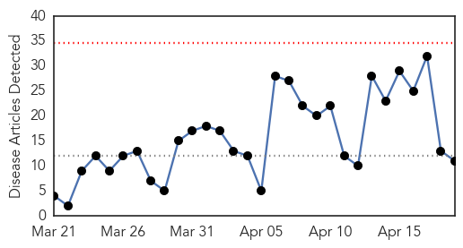
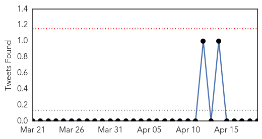

Influenza
30-Day Web Trend
0 alerts, 0 warnings

30-Day Twitter Trend
0 alerts, 0 warnings

Article Locations

Article Confidences
Top Articles:
- 0.974
- Health officials keeping close eye on dog flu
- 0.933
- Federal Health Minister urges people to get their flu shots
- 0.860
- Dog owners in Chicago suburbs beware -- Canine flu virus reaches McHenry County
- 0.825
- Nation's No. 1 egg-producing state aims to keep bird flu out
- 0.803
- College of Veterinary Medicine implements precautions for open house Saturday (April 18) due to canine influenza
- 0.751
- April 18, 2015 Archives
- 0.702
- Vets predict canine influenza outbreak will spread to SC
- 0.577
- It is confirmed ... Bird Flu has landed here
- 0.556
- Avian flu mystery has turkey farmers on edge
- 0.523
- Avian influenza confirmed on second farm in Southern Ontario
- 0.522
- Rainfall Special Weather Statement ends
Top Tweets:
-
No tweets found for Apr 19, 2015
Unknown
30-Day Web Trend
0 alerts, 0 warnings
30-Day Twitter Trend
0 alerts, 0 warnings
Article Locations

Article Confidences
Top Articles:
- 0.939
- Victims of strange disease took alcohol mixed with roots, says govt
- 0.917
- Chicago Tribune
- 0.917
- Chicago Tribune
- 0.882
- Strange disease in Ondo is not contagious
- 0.853
- Doctors investigating mystery illness that has killed at least 13
- 0.840
- Superbug outbreak: piggery workers affected, cause unknown
- 0.817
- 18 dead from mysterious illness in Nigeria
- 0.816
- HIV breakthrough ‘imminent’, says Medicine Nobel Laureate
- 0.795
- Canada quarantines chicken farm infected with bird flu
- 0.782
- Avian flu: surveillance continues
- 0.726
- What you need to know about dog flu
- 0.671
- Ondo State Commissioner Reveals Cause Of Mystery Disease
- 0.667
- the edge of knowledge
- 0.643
- Indiana facing worst HIV AIDS outbreak in history of the US
- 0.632
- Thousands of Muslim children not being vaccinated against the flu after Kirklees imams reject NHS nasal spray
- 0.598
- seMissourian.com: National News: Canine flu outbreak sickens hundreds of dogs in Midwest (04
- 0.593
- News on Costa Rica, Business News, Opinion, Sports, Entertainment and More
- 0.580
- Fiona Stanley Hospital refers worried patients to GPs for blood tests
- 0.574
- Weedkillers not Molokun god responsible for Ondo mysterious deaths — WHO
- 0.570
- Methanol ingestion can cause it — Commissioner
- 0.564
- UnitedHealth : Morehouse School of Medicine Receives $1.2 Million Grant from United Health Foundation and Optum to Help Build Healthier Communities in Atlanta
- 0.563
- Morehouse School of Medicine Receives $1.2 Million Grant from United Health Foundation and Optum to Help Build Healthier Communities in Atlanta
- 0.559
- 'Super' bedbugs found in Vancouver's Downtown Eastside
- 0.547
- thenews.com.pk
- 0.545
- Humanitarian Agencies are Rushing Assistance to People Fleeing Violence in Anbar [ENG/AR/KU] - Iraq
- 0.545
- Harsh Winter Might Have Actually Helped Deer Tick Population This Year
Top Tweets:
- 0.537
- Seasonal Flu 2009 http://t.co/jl3sDBJH1h